Видеостена
Видеостена — это просто большой экран, обычно состоящий из нескольких дисплеев меньшего размера.
С точки зрения использования, видеостена выступает в роли одного очень большого дисплея. Поэтому, отдельностоящий большой дисплей можно считать частным случаем видеостены. Для распределения изображения по составным экранам используется специализированный контроллер. На вход ему подается исходный видеосигнал, он его преобразует — режет на части, масштабирует, корректирует итд. — и распределяет между отдельными дисплеями.
Обычно используются такие конфигурации видеостен:

Иногда можно и нужно использовать дисплеи разных размеров в одной связке.
Еще один важный элемент системы — это медиаплеер. Собственно он выступает источником видеосигнала для видеостены. Медиаплеер должен быть способным выдавать сигнал с высоким разрешением, работать в непрерывном режиме, управляться и контролироваться по сети. Для простых случаев контроллер и плеер могут быть объеденены в одно устройство.
Следующий элемент — это планировщик показов. Планировщик выступает в роли администратора всей системы — определяет что, когда и где будет показываться, контролирует работоспособность элементов системы, ведет статистику показов. Он по сети связывается с отдельными плеерами и раздает им задания, также собирая информацию о сбоях в работе. Если в системе задействована одна видеостена и демонстрируемый контент мало\редко меняется, то можно обойтись и без планировщика. В случае же нескольких точек отображения он становится необходим. В роли планировщика обычно выступает компьютер со специальным программным обеспечением.
Рассмотрим несколько вариантов использования.
Информационно-рекламный экран
Обычно устанавливается в оживленных местах крупных торговых центров. На нем демонстрируются короткие развлекательные ролики чередующиеся рекламой или справочной информацией. Размер видеостены зависит от размеров помещения.
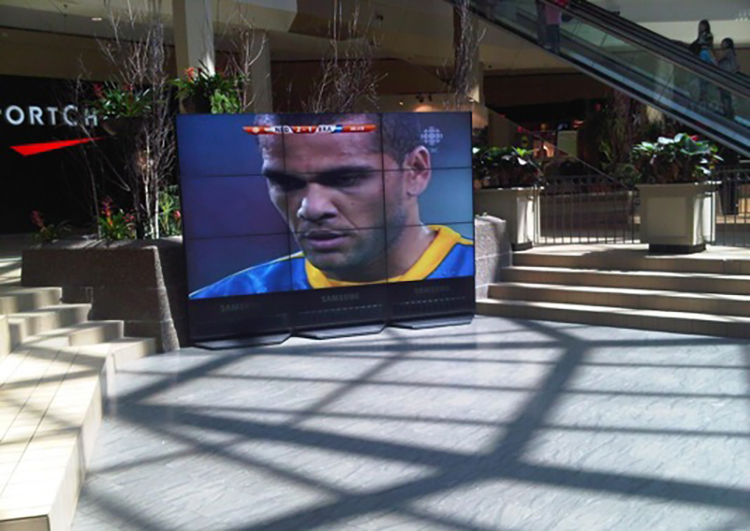
Возможны разные конфигурации. В том числе и необычные.
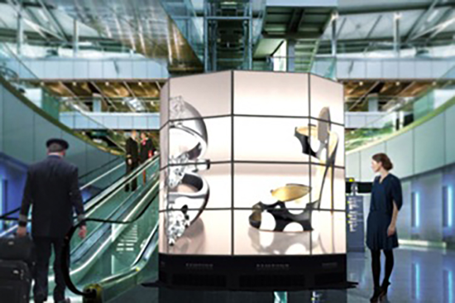
Видеовитрина
Использование экранов в оформлении витрин становится все более популярным. Обычный экран занимает лишь небольшую часть витрины, поэтому он может не всегда гармонично вписываться в традиционный дизайн. Применение видеостены позволяет сушественно изменить концепцию витрины. Это может быть динамический фон для выставляемых образцов плюс вся сопутствующая информация. Другой вариант, это вообще отказаться от материальных образцов заменив их качественным изображением. Такой подход позволяет сделать постоянно обновляющуюся витрину и показать потребителю гораздо больше товаров.
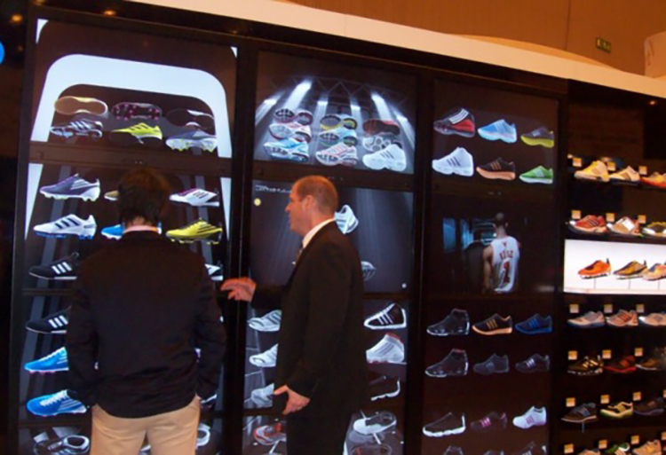
Элементы интерьера
Дисплеи и комбинации из них прекрасно подходят для создания необычных и привлекающих внимание интерьеров. С помощью технологии видеостен можно сделать «притягивающую к себе» кассовую зону в магазине. Или имитацию окон в кафе
с элементами виртуальной реальности. Установив элементы такой системы в торговом зале можно менять интерьер в зависимости от времени года, дня недели, увязывать с проводимой рекламной компанией. Начальные инвестиции довольно
быстро возвращаются потому что: динамический интерьер — это необычно и привлекает покупателей, меньше расходов и время простоя при смене декораций (новый год,
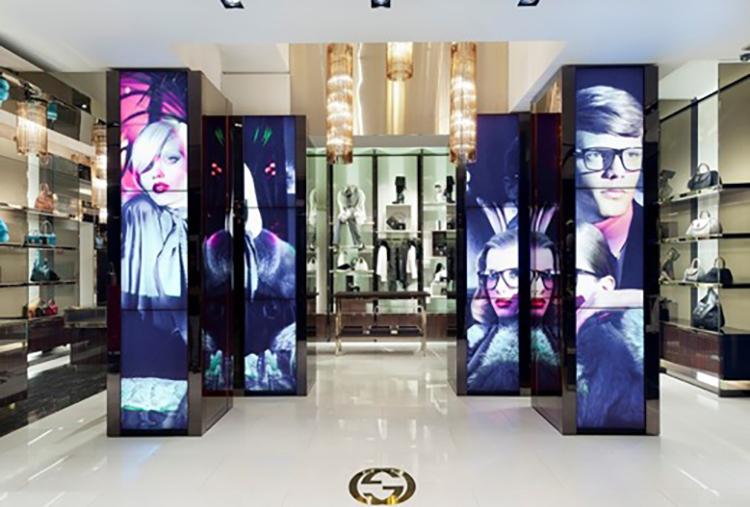
Цифровая вывеска — меню
Для кафе и ресторанов применение видеостен в качестве меню полностью заменяет традиционные вывески и открывает новые возможности.
Например, «живое меню» около входа привлечет внимание посетителей и позволит им заранее определиться с выбором. В зоне заказа видеостена позволит вывести больше информации о предлагаемых блюдах, отрекламировать приоритетные позиции, развлечь в случае ожидания. Можно увязать выводимую информацию с данными торговой системы и убирать те позиции, которые закончились. Или приоритетно рекламировать те позиции, которых слишком много или заканчивается срок реализации. Можно указывать время ожидания заказа в зависимости от типа блюда и степени загрузки кухни. Если в кафе проводится какое-то особое мероприятие, то видеостена может послужить оформительским целям.
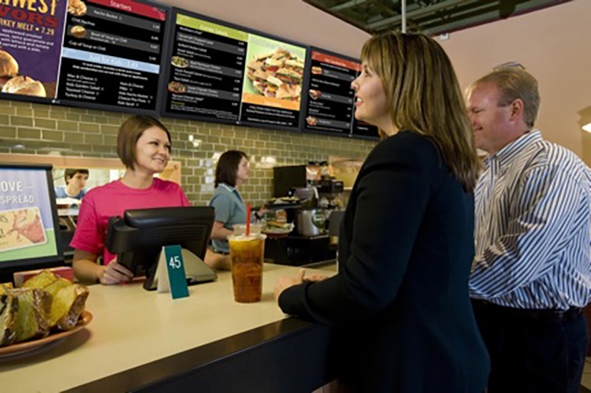
При любом сценарии использования, видеостена в качестве меню выглядит гораздо красочнее и современнее чем традиционные вывески.
Типовая конфигурация
Важно отметить, что видеостена относится к средствам производства. Это означает, что оборудовании для видеостен должно быть надежным и способным работать в режиме 24/7. Поэтому при соэдании видеостен используются только профессиональные мониторы и компьютеры.
Для оценки рассмотрим простой случай одиночной видеостены из четырех монторов 47 дюймов. Она может быть смонтирована как 2×2, так и 4×1. Тогда для ее реализации потребуются:
- Монитор 47 дюймов — 4 шт
- Видеоконтроллер на 4 выхода — 1 шт
- Видеоплеер — 1 шт
- Комплект кабелей — 1 шт
Примерная стоимость такого решения составляет от 330 000 рублей
Бюджетный вариант такого решения — это расставленные в разных местах торгового зала дисплеи бытового класса, подключенные к одному плееру. Такой набор, состоящий из четырех дисплеев 42 дюйма и компьютера со специальным ПО будет стоить от 80 000 рублей.
Важно иметь не только средства отображения, но и то, что будет на них демонстрироваться. Мы можем подготовить для вас рекламный ролик по вашей тематике. Стоимость
Измерение аудитории
Для разработки успешной стратегии продаж необходимо как можно больше знать о своих клиентах. Кто они, сколько их, возрастные и гендерные соотношения. Как зависит число посетителей от времени дня, дня недели, месяца. Как меняется ситуация в предпраздничные дни, итд. Имея такую информацию можно гибче планировать маркетинговые акции, использование персонала и товарные запасы. Такие данные также позволят оценивать эффективность той или иной рекламы, изменения в организации торговой зоны, оформлении витрин и многое другое.
Раньше для сбора такой информации привлекали специализированные агентства или использовали свой персонал, который в ручном режиме пересчитывал, фиксировал, отмечал. К минусам такого подхода можно отнести «временную точечность» данных, саботаж и высокую стоимость.
С развитием технологий распознавания образов эта задача получила новое решение. Теперь мониторинг аудитории можно проводить в непрерывном режиме, с высокой точностью и значительно дешевле. Получая на выходе уже обработанные и адаптированные для анализа данные.
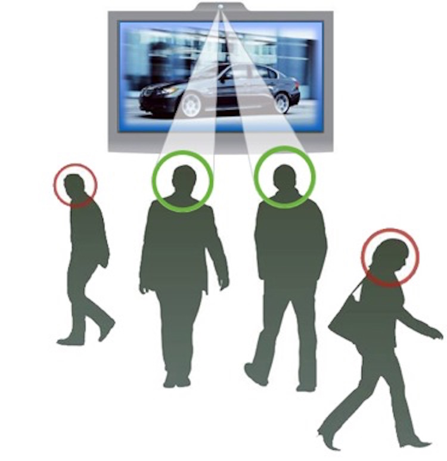
Важно отметить, что в процессе сбора информации не сохраняется какая либо персональная информация о посетителях — фото, личные данные итд. Вся статистическая информация абсолютно анонимна.
Такое решение для анализа аудитории обычно состоит из следующих компонентов:
- Качественная видеокамера
- Компьютер
- Специальное ПО
Результатом работы являются данные о количестве зрителей\посетителей, их пол, возраст, с привязкой к временной шкале.
Рассмотрим возможные варианты применения данной технологии.
Оценка эффективности рекламы
Практически любой рекламный носитель можно дооснастить системой анализа аудитории — будь то рекламный стенд или видеостена. Полученные данные позволят оценить выбор места размещения носителя и его воздействие на посетителей. В случае наличия внутренней сети из рекламных видеоэкранов возможен подсчет зрителей для каждого демонстрируемого ролика, что поможет эффективно продавать рекламное время.
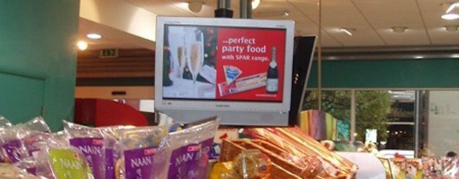
Такое решение позволяет узнать для каждого интервала времени, сколько людей прошло мимо, сколько людей смотрело на носитель и как долго. Учитывая, что система распознает пол и возрастную категорию зрителя, можно сделать показ рекламы адаптирующимся под аудиторию. Например, если перед экраном в данный момент большинство детей, то выбрать следующий ролик из детской категории — про игрушки.
Оценка эффективности прилавка
Так как применяемые камеры имеют небольшие размеры и не привлекают внимания их можно разместить практически в любом, представляющем интерес, месте магазина. Это может быть прилавок, стеллаж с товарами, холодильник с напитками итд.
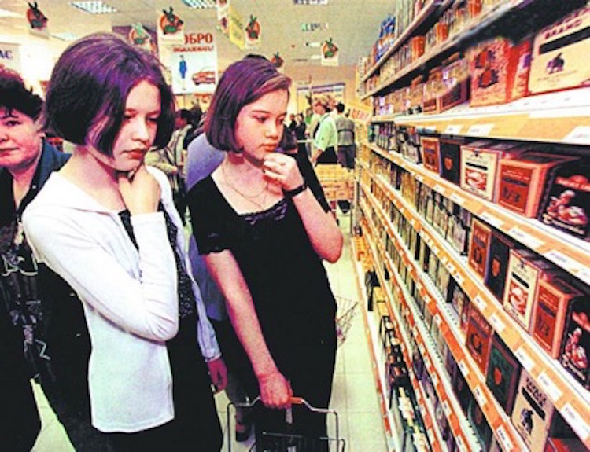
Опираясь на полученные данные можно подобрать оптимальную выкладку товаров, оценить влияние рекламной компании, оптимизировать ассортимент и многое другое. Если в магазине установлено несколько камер, то также можно узнать, где больше\меньше посетителей в разное время дня, где они дольше задерживаются и в соответствии с этим внести изменения организацию торгового пространства.
Оценка потока посетителей
Важнейший параметр для любого объекта торговли — это количество посетителей. Этот параметр позволяет оценивать эффективность торговых площадей в данном месте и прогнозировать результаты торговли. Реклама, расширение парковки, ремонтные работы по соседству, и тому подобное — все это влияет на число посетителей. Так же их количество меняется во времени, поток по-разному распределяется внутри торгового центра итд. Ответить на главные вопросы ритейла — сколько, кто, где и когда — поможет установка системы учета потока посетителей.
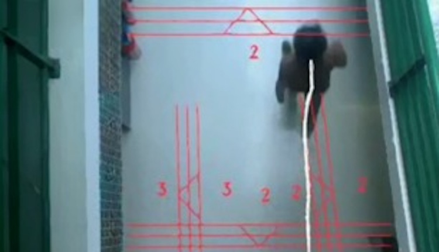
Камеры могут быть установлены как над входом в отдельный магазин, так и в холле торгового центра. Сопоставляя данные с разных камер можно узнать распределение посетителей. Зная среднее количество посетителей за день можно лучше решать вопросы стоимости аренды. А опираясь на временные изменения — планировать число сотрудников. Появляется возможность отслеживать на постоянной основе два важнейших показателя — коэффициент посещаемости (сколько вошло людей в магазин по отношению к прошедшим мимо) и коэффициент конверсии (отношение числа покупок к числу посетителей). Наконец, можно узнать, какая именно рекламная компания пошла на пользу и оправдала затраты!
Оценка стоимости решения
Как уже упоминалось, в простом случае решение состоит из видеокамеры и компьютера с установленным специальным ПО. Компьютер по сети передает данные в центр обработки. Результатом являются адаптированные для анализа данные, представленные в графическом и\или табличном виде.
Стоимость типового решения от 3 000 рублей в месяц за одну точку наблюдения. То есть, 10 комплексов наблюдения, работающих в непрерывном режиме, обойдутся дешевле одного нового сотрудника.
Мы можем также взять на себя монтаж и настройку оборудования, обработку данных и подготовку отчетов.
Цифровая карта покупателя
В связи с тотальным распространением смартфонов стало возможным переложить на них еще одну важную функцию. Быть универсальным хранилищем для карт лояльности, скидочных карт, подарочных карт, разовых купонов итд. Ведь «физическую» карточку можно легко забыть дома. А смартфон всегда с нами.
Кроме того, у цифровых карт есть еще много достоинств:
- Не занимает места, легко хранить и искать
- Появляется когда необходима — может быть привязана к географической точке
- Не требует специального оборудования — считывается большинством штрих-код считывателей
- Просто создается — загружаем дизайн и определяем для карты тип и условия использования
- Защищена от подделки цифровой подписью
- Существенно дешевле привычных пластиковых карт
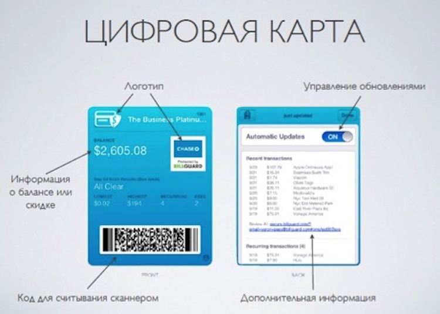
Работает это следующим образом. Магазин создает карточку. Покупатель загружает ее к себе на смартфон. При совершении покупки он активирует ее — она появляется на экране телефона. Продавец считывает ее сканером прямо с экрана. И дальше все как обычно — скидки, баллы или подарки.
Для того, чтобы воспользоваться этим достижением технологического прогресса необходимо развернуть на торговом объекте Сервис цифровых карт.
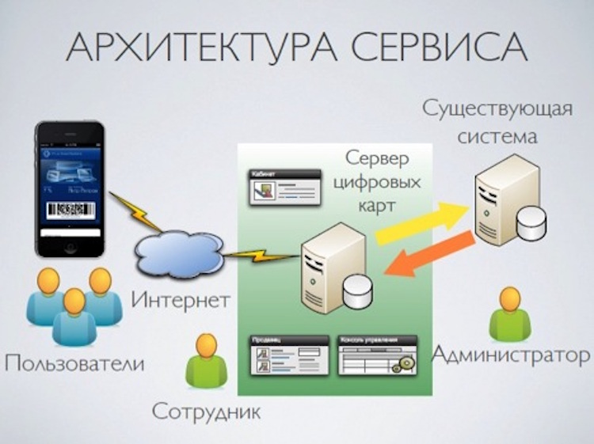
Сервис цифровых карт позволяет:
- Создавать различные цифровые карты и купоны
- Привязывать карты к клиентам и точкам обслуживания
- Доставлять карты на мобильные устройства
- Централизованно управлять выпущенными картами
- Авторизовать пользователей карт и предоставлять доступ к услугам и скидкам
- Собирать информацию об активностях пользователей электронных карт
- Обмениваться информацией с существующими торговыми системами
Для пользователя создается личный кабинет, где он может видеть все свои карты, их статус, удалять не нужные. Доступ к нему осуществляется через интернет.
Сотрудник занимается тем, что раздает карты покупателям, авторизует их при покупках.
Администратор создает новые карты и определяет политику их применения.
Оценка стоимости решения
В случае внедрения системы в торговом центре стоимость составит от 250 000 рублей. Подключение каждого нового магазина — от 50 000 рублей. Техническая поддержка и сопровождение системы от 100 000 рублей в месяц.
Инфокиоск
Информационные сенсорные терминалы стали неотъемлемой частью современных торговых центров. Они способны решать множество задач, стильно выглядят и не просят зарплаты. Важно установить его в правильном месте и наделить правильной функциональностью. Тогда он довольно быстро вернет затраты и дальще будет помогать зарабатывать.
Обычно такие киоски показывают рекламу, а при приближении посетителя переходят в интерактивный режим. В этом режиме он выступает в роли навигатора по торговому центру, помогает найти нужный магазин, информирует о скидках и акциях, а так же о будущих маркетинговых событиях.
Возможны и другие интересные сценарии общения. Например, игры-квесты с посетителями на призы. Или возможность сфотографироваться с обновкой и отправить снимок в социальные сети друзьям.
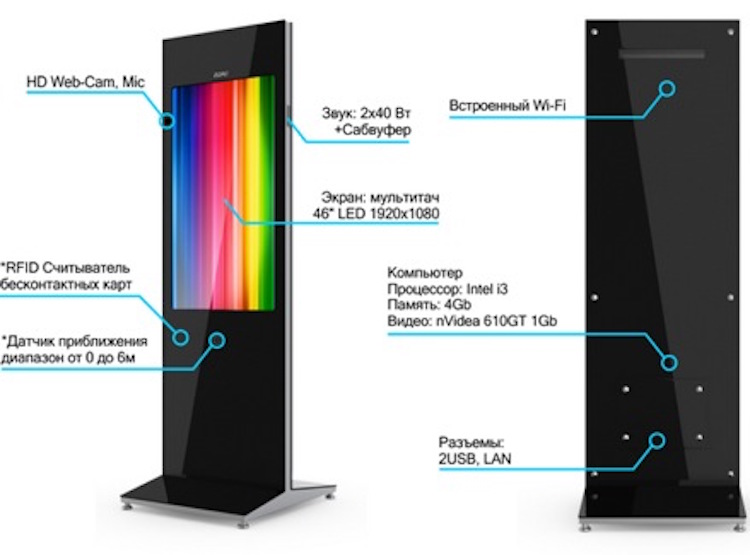
Для разных задач нужны разные киоски. И мы можем предоставить широкую гамму этих устройств с разными функциональными возможностями.
В качестве примера хочется привести один из самых стильных на рынке киоск из тонированного закаленного стекла. Он выглядит как очень большой и очень красивый смартфон. А как обращаться со смартфоном знают все.
В данном примере цвет корпуса дымчато-черный. В соответствии с пожеланиями он может быть практически любой. Срок изготовления —
| Тип: | Напольный |
| Монитор: | 46″ (ИК 10 касаний) |
| Процессор: | Intel i3 3.3 Ghz (два ядра) |
| Оперативная память: | 4 Gb |
| Твердотельный жесткий диск SSD: | 32GB |
| Видео: | Интегрированное |
| Интерфейсы: | 2 USB, LAN RJ45, Wi-Fi |
| Габариты: | 2125×700×69мм. |
| Вес: | 145кг. |
Работы и услуги
Для каждого из предлагаемых решений мы можем предоставить полный набор сопутствующих работ и услуг.
Ведь каждый случай по своему уникален, и в задаче на эффективность есть много параметров. Для того, чтобы решение действительно приносило пользу необходимо их компетентно учесть и грамотно реализовать.
Вот примерный, но отнюдь не полный список дополнительных опций:
- Постановка задачи
- Выбор оптимального оборудования и ПО
- Монтаж и настройка
- Привязка к существующей инфраструктуре
- Мониторинг работы
- Техническое обслуживание
- Обработка результатов измерений
- Разработка дополнительного ПО
- Бизнес-аналитика
- Производство рекламного контента
- Модернизация под задачу
Мы можем подготовить прототип выбранного решения и продемонстрировать его в реальных условиях. Это будет не просто выставочный образец, а реально работающее решение под конкретную задачу. И у вас будет возможность достоверно оценить его полезность именно для себя. Обращайтесь.
Стоимость такого киоска составляет от 150 000 рублей.